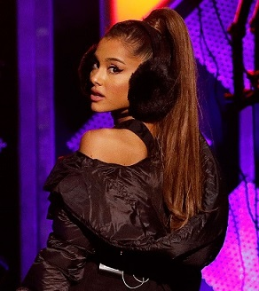

|
Christmas & Chill es el segundo EP de villancicos, y el tercero en total
de la artista estadounidense Ariana Grande.fue lanzado el 18 de diciembre 2015, a través Republic Records.
Las seis pistas son canciones navideñas originales, fueron escritas y producidas por la cantante.
Según Grande, el
EP fue grabado en menos de una semana en el estudio de su casa.Los créditos de composición son compartidos por Grande
con Tommy Brown, Michael Foster, Steven Franks, Victoria Monet, Travis Sayles, Ryan Mateo Tedder y
Peter Lee Johnson.
Jaleesa M. Jones en
USA Today lo llamó "una oda al romance festivo del invierno".
Emma Garland de
Noisey dijo que el álbum
"básicamente suena como un álbum de
Cassie... pero con cascabeles y letras como '!en la estación del tren, dando un poco de amor! ' Es básicamente el jugueteo festivo
perfecto ".
Canciones incluidas en el EP:
- "Intro"
- "Wit It This Christmas
- "December"
- "Not just no christmas"
- "True love"
- "Winter things"
|

|